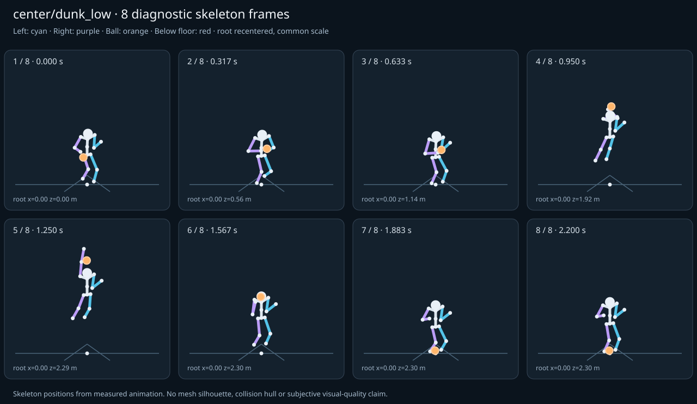

מה הוריד את הציון
- קפיצות פוזה: LeftHand בזמן 0.5833 ש׳; קפיצת סיבוב שקולה 121.4545 מעלות ב־60Hz (אדום)
- כניסה ויציאה מול המתנה: פער ב־כניסה מול המתנה; יחס חריגה 3.471 (אדום)
- מגע בכדור: פער פני כדור 0.0317 מ׳, RightHand, בזמן 0.5833 ש׳ (צהוב)
כיסוי: 100%. לא כל מדד חל על כל קליפ; הסטטוס והראיות מפורטים למטה.
שמונה פריימים
תצוגת שלד אבחונית שנבנתה מהפריימים הנמדדים. צד שמאל בכחול, ימין בסגול, כדור בכתום. מיקום השורש ממורכז לצפייה; מיקומו בעולם כתוב בכל פריים.

המדדים והראיות
| מדד | מצב | ערך | ציון | סף ופרטי מדידה |
|---|---|---|---|---|
| החלקת רגליים | ירוק | 0.001 height ratio | 99 | {
"definition": {
"label": "החלקת רגליים",
"unit": "height ratio",
"green": 0.01,
"yellow": 0.035,
"weight": 18,
"description": "Maximum horizontal sole displacement from the first sample of each declared support window, divided by character height. Inferred support is used only when no windows were supplied."
},
"value": 0.000614,
"status": "green",
"score": 98.77,
"evidence": {
"coordinateSpace": "native GLB external Motion node (applied once)",
"supportSource": "declared",
"windows": 6,
"samples": 104,
"maxDriftMeters": 0.001277,
"p95SpeedMetersPerSecond": 0.033121,
"worst": {
"bone": "RightFoot",
"t": 0.716667,
"start": 0.6,
"end": 0.8,
"driftMeters": 0.001277
}
}
} |
| חדירה לרצפה | ירוק | 0.002 height ratio | 92 | {
"definition": {
"label": "חדירה לרצפה",
"unit": "height ratio",
"green": 0.005,
"yellow": 0.02,
"weight": 15,
"description": "Maximum depth of the supplied sole probe points and all skeletal joint centers below the declared floor plane, divided by height. Sole probes are not a mesh collision audit."
},
"value": 0.002021,
"status": "green",
"score": 91.92,
"evidence": {
"samples": 2660,
"floorY": 0,
"probeKind": "declared sole probes plus skeletal joint centers (no mesh surfaces)",
"maxDepthMeters": 0.004203,
"worst": {
"t": 0.75,
"bone": "LeftFoot",
"depthMeters": 0.004203,
"y": -0.004203
}
}
} |
| קפיצות פוזה | אדום | 8.097 discontinuity ratio | 0 | {
"definition": {
"label": "קפיצות פוזה",
"unit": "discontinuity ratio",
"green": 1,
"yellow": 2.5,
"weight": 18,
"description": "Maximum adjacent 60 Hz-equivalent step: root-relative marker displacement / 0.04 height, root-relative rotation / 15 degrees, or root translation / 0.08 height. A fast continuous action can also exceed this screening threshold."
},
"value": 8.096968,
"status": "red",
"score": 0,
"evidence": {
"adjacentPairs": 132,
"observations": 2244,
"maxDegrees60Hz": 121.454522,
"maxMarkerStepHeight60Hz": 0.166886,
"maxRootStepHeight60Hz": 0.028935,
"worst": {
"ratio": 8.09696813904736,
"t": 0.583333,
"previousTime": 0.566667,
"bone": "LeftHand",
"markerStepHeight60Hz": 0.106528,
"degrees60Hz": 121.454522
}
}
} |
| חריגות אנטומיות | ירוק | 0 % affected frames | 100 | {
"definition": {
"label": "חריגות אנטומיות",
"unit": "% affected frames",
"green": 0.5,
"yellow": 3,
"weight": 14,
"description": "Percentage of frames with elbow or knee flexion above 165 degrees, neck bend above 80 degrees, or a segment length changing by more than 5%. Optional calibrated hinge checks detect reverse knee flexion above 8 degrees. Conservative marker limits do not diagnose axial joint twist."
},
"value": 0,
"status": "green",
"score": 100,
"evidence": {
"testedFrames": 133,
"affectedFrames": 0,
"checks": 2261,
"maxLimbFlexionDegrees": 160.286215,
"maxRelativeSegmentLengthChange": 0,
"hingeDirectionChecked": true,
"axialTwistChecked": false,
"violations": []
}
} |
| מגע בכדור | צהוב | 0.015 height ratio | 80 | {
"definition": {
"label": "מגע בכדור",
"unit": "height ratio",
"green": 0.015,
"yellow": 0.05,
"weight": 13,
"description": "Maximum absolute distance from the ball surface to the sampled, bone-transformed declared contact point, divided by height. Events are evaluated at their exact declared times by interpolation."
},
"value": 0.015226,
"status": "yellow",
"score": 79.81,
"evidence": {
"radiusMeters": 0.12,
"samples": 97,
"missed": [],
"contacts": [
{
"t": 0.583333,
"bone": "RightHand",
"gapMeters": 0.031671,
"signedGapMeters": -0.031671,
"centerDistanceMeters": 0.088329,
"contactPoint": [
-0.078186,
1.201777,
1.419527
],
"ballCenter": [
0,
1.199635,
1.460569
],
"declaredLocalPoint": true
},
{
"t": 0.183333,
"bone": "RightHand",
"gapMeters": 0.026654,
"signedGapMeters": -0.026654,
"centerDistanceMeters": 0.093346,
"contactPoint": [
-0.212511,
1.204738,
0.740514
],
"ballCenter": [
-0.17,
1.125968,
0.714026
],
"declaredLocalPoint": true
},
{
"t": 0.883333,
"bone": "RightHand",
"gapMeters": 0.00212,
"signedGapMeters": -0.00212,
"centerDistanceMeters": 0.11788,
"contactPoint": [
-0.043238,
2.088253,
1.849727
],
"ballCenter": [
-0.047917,
2.08877,
1.967513
],
"declaredLocalPoint": true
},
{
"t": 0.116667,
"bone": "RightHand",
"gapMeters": 0.001956,
"signedGapMeters": -0.001956,
"centerDistanceMeters": 0.118044,
"contactPoint": [
-0.338147,
0.920761,
0.527246
],
"ballCenter": [
-0.34,
0.802739,
0.525974
],
"declaredLocalPoint": true
},
{
"t": 0.85,
"bone": "RightHand",
"gapMeters": 0.001941,
"signedGapMeters": -0.001941,
"centerDistanceMeters": 0.118059,
"contactPoint": [
-0.034917,
1.877814,
1.799214
],
"ballCenter": [
-0.04,
1.876871,
1.917161
],
"declaredLocalPoint": true
},
{
"t": 0.05,
"bone": "RightHand",
"gapMeters": 0.001845,
"signedGapMeters": -0.001845,
"centerDistanceMeters": 0.118155,
"contactPoint": [
-0.338281,
0.921751,
0.385275
],
"ballCenter": [
-0.34,
0.803614,
0.384136
],
"declaredLocalPoint": true
},
{
"t": 0.016667,
"bone": "RightHand",
"gapMeters": 0.001719,
"signedGapMeters": -0.001719,
"centerDistanceMeters": 0.118281,
"contactPoint": [
-0.337159,
1.04053,
0.354654
],
"ballCenter": [
-0.34,
0.922398,
0.349431
],
"declaredLocalPoint": true
},
{
"t": 0.15,
"bone": "RightHand",
"gapMeters": 0.001624,
"signedGapMeters": -0.001624,
"centerDistanceMeters": 0.118376,
"contactPoint": [
-0.337142,
1.039187,
0.620664
],
"ballCenter": [
-0.34,
0.920981,
0.615
],
"declaredLocalPoint": true
},
{
"t": 0.916667,
"bone": "RightHand",
"gapMeters": 0.001475,
"signedGapMeters": -0.001475,
"centerDistanceMeters": 0.118525,
"contactPoint": [
-0.05232,
2.332002,
1.921601
],
"ballCenter": [
-0.05555,
2.332237,
2.040082
],
"declaredLocalPoint": true
},
{
"t": 1.15,
"bone": "RightHand",
"gapMeters": 0.001332,
"signedGapMeters": 0.001332,
"centerDistanceMeters": 0.121332,
"contactPoint": [
-0.077988,
3.226744,
2.281737
],
"ballCenter": [
-0.08,
3.226787,
2.403052
],
"declaredLocalPoint": true
},
{
"t": 0.816667,
"bone": "RightHand",
"gapMeters": 0.001244,
"signedGapMeters": -0.001244,
"centerDistanceMeters": 0.118756,
"contactPoint": [
-0.027166,
1.720274,
1.78029
],
"ballCenter": [
-0.032083,
1.717318,
1.898907
],
"declaredLocalPoint": true
},
{
"t": 0.783333,
"bone": "RightHand",
"gapMeters": 0.000939,
"signedGapMeters": -0.000939,
"centerDistanceMeters": 0.119061,
"contactPoint": [
-0.020459,
1.595334,
1.772216
],
"ballCenter": [
-0.02445,
1.592953,
1.891187
],
"declaredLocalPoint": true
},
{
"t": 0.95,
"bone": "RightHand",
"gapMeters": 0.000803,
"signedGapMeters": -0.000803,
"centerDistanceMeters": 0.119197,
"contactPoint": [
-0.060629,
2.586581,
2.005806
],
"ballCenter": [
-0.062613,
2.586493,
2.124987
],
"declaredLocalPoint": true
},
{
"t": 0.75,
"bone": "RightHand",
"gapMeters": 0.000726,
"signedGapMeters": -0.000726,
"centerDistanceMeters": 0.119274,
"contactPoint": [
-0.014758,
1.46335,
1.727442
],
"ballCenter": [
-0.017387,
1.462126,
1.84668
],
"declaredLocalPoint": true
},
{
"t": 0.716667,
"bone": "RightHand",
"gapMeters": 0.000489,
"signedGapMeters": -0.000489,
"centerDistanceMeters": 0.119511,
"contactPoint": [
-0.009629,
1.341784,
1.638554
],
"ballCenter": [
-0.011176,
1.341286,
1.758053
],
"declaredLocalPoint": true
},
{
"t": 1.116667,
"bone": "RightHand",
"gapMeters": 0.000462,
"signedGapMeters": 0.000462,
"centerDistanceMeters": 0.120462,
"contactPoint": [
-0.078916,
3.294435,
2.280915
],
"ballCenter": [
-0.08,
3.294462,
2.401372
],
"declaredLocalPoint": true
},
{
"t": 0.983333,
"bone": "RightHand",
"gapMeters": 0.000311,
"signedGapMeters": -0.000311,
"centerDistanceMeters": 0.119689,
"contactPoint": [
-0.067517,
2.830934,
2.092663
],
"ballCenter": [
-0.068824,
2.830762,
2.212344
],
"declaredLocalPoint": true
},
{
"t": 0.683333,
"bone": "RightHand",
"gapMeters": 0.00028,
"signedGapMeters": -0.00028,
"centerDistanceMeters": 0.11972,
"contactPoint": [
-0.005307,
1.265469,
1.53255
],
"ballCenter": [
-0.006104,
1.265325,
1.652267
],
"declaredLocalPoint": true
},
{
"t": 1.183333,
"bone": "RightHand",
"gapMeters": 0.000185,
"signedGapMeters": -0.000185,
"centerDistanceMeters": 0.119815,
"contactPoint": [
-0.07948,
3.167184,
2.281866
],
"ballCenter": [
-0.08,
3.167325,
2.40168
],
"declaredLocalPoint": true
},
{
"t": 0.65,
"bone": "RightHand",
"gapMeters": 0.000115,
"signedGapMeters": -0.000115,
"centerDistanceMeters": 0.119885,
"contactPoint": [
-0.002151,
1.223636,
1.436396
],
"ballCenter": [
-0.002453,
1.223617,
1.55628
],
"declaredLocalPoint": true
}
],
"contactDetailsTruncated": true,
"coordinateSpace": "native GLB external Motion node (applied once)"
}
} |
| כניסה ויציאה מול המתנה | אדום | 3.471 continuity ratio | 46 | {
"definition": {
"label": "כניסה ויציאה מול המתנה",
"unit": "continuity ratio",
"green": 1,
"yellow": 3,
"weight": 10,
"description": "Worst entry/exit mismatch to the best matching idle phase: RMS marker error / 0.04 height, RMS bone rotation / 25 degrees, or RMS endpoint velocity error / 0.75 height per second. Horizontal root translation is aligned; root height and body pose remain measurable."
},
"value": 3.471039,
"status": "red",
"score": 46.07,
"evidence": {
"entry": {
"ratio": 3.4710387952353496,
"t": 0,
"idleTime": 0,
"markers": 17,
"rmsPositionHeight": 0.138842,
"rmsRotationDegrees": 48.063795,
"rmsVelocityHeightPerSecond": 0.66666,
"velocityEvaluated": true
},
"exit": {
"ratio": 3.3313511753076224,
"t": 2.2,
"idleTime": 0,
"markers": 17,
"rmsPositionHeight": 0.133254,
"rmsRotationDegrees": 44.878506,
"rmsVelocityHeightPerSecond": 0.033805,
"velocityEvaluated": true
},
"worstEndpoint": "entry",
"alignment": "horizontal root translation; raw asset poses used when provided"
}
} |
| מהירות גוף מול צעדים | לא חל | — relative speed error | — | {
"definition": {
"label": "מהירות גוף מול צעדים",
"unit": "relative speed error",
"green": 0.2,
"yellow": 0.5,
"weight": 8,
"description": "Relative difference between average root travel speed and the median backward support-foot sweep speed relative to the root. Cadence and implied stride lengths are also reported. In-place clips need an explicit reference travel scenario; stationary actions are not scored as locomotion."
},
"value": null,
"status": "not-applicable",
"score": null,
"reason": "This action is not declared locomotion.",
"evidence": {}
} |
| סימטריה | ירוק | 0 relative mismatch | 100 | {
"definition": {
"label": "סימטריה",
"unit": "relative mismatch",
"green": 0.03,
"yellow": 0.1,
"weight": 4,
"description": "Maximum bilateral segment-length mismatch. Looping locomotion additionally compares reflected half-cycle leg markers; explicit pose symmetry compares simultaneous bilateral markers. One-sided actions retain unscored motion diagnostics, so a valid kick or dribble arm is not penalized for intentional asymmetry."
},
"value": 0,
"status": "green",
"score": 100,
"evidence": {
"mode": "structural",
"modeSource": "structural default for intentional asymmetry",
"structuralMismatch": 0,
"segments": [
{
"segment": "Arm-ForeArm",
"mismatch": 0
},
{
"segment": "ForeArm-Hand",
"mismatch": 0
},
{
"segment": "UpLeg-Leg",
"mismatch": 0
},
{
"segment": "Leg-Foot",
"mismatch": 0
}
],
"motionRmsHeight": null,
"worstMotion": null,
"bilateralPoseRmsHeightUnscored": 0.142923,
"note": "One-sided authored actions are checked for structural symmetry only."
}
} |